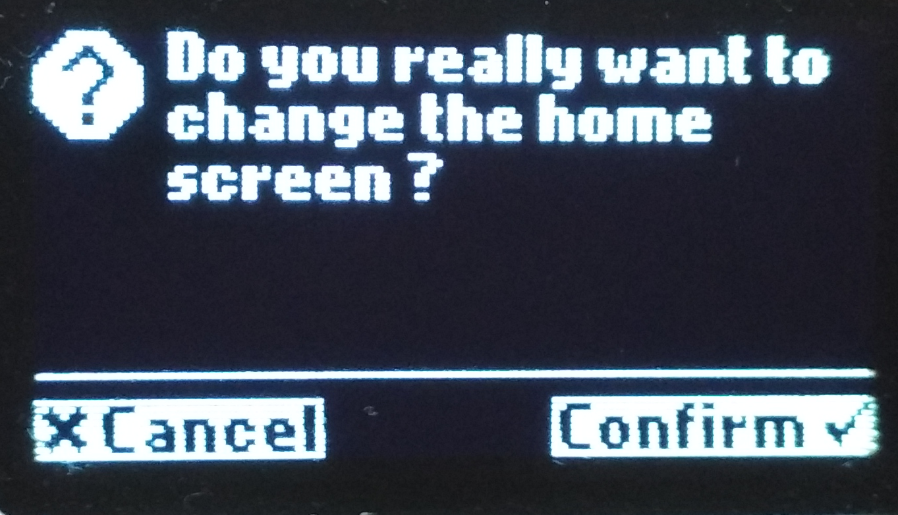

Homescreen¶
Personalize your TREZOR’s homescreen easily. There are several ways to do it:
- 1. Upload your own homescreen picture or
- 2. Use TREZOR Homescreen Editor to upload and edit any picture or
- 3. Choose from TREZOR Homescreen Gallery

1. Upload your own homescreen picture¶

Pictures have to be in the required format (128 x 64 px; black & white only).
- click the Browse button to locate the picture on your computer
- confirm the upload
- if you are satisfied with the homescreen preview, click on the Set as homescreen button. You will be asked to confirm the action on your TREZOR device.
Done!
{kind=link}
2. Use TREZOR Homescreen Editor¶

- Please click on the homescreen editor link if you wish to set your own picture as a TREZOR homescreen. You will be taken to another website.
- Upload a picture from your harddrive or insert a link to the picture from the Internet
- You can play with the settings such as brightness, sharpness and fake shading, you can rotate the picture and so on until you are happy with the preview.
- Save the prepared picture to your harddrive, return to TREZOR Wallet and follow the steps to 1. Upload your own homescreen picture.
3. Choose from TREZOR Homescreen Gallery¶

The simplest way to change your homescreen is to use a picture in our gallery.
- Select your desired picture in the gallery
- Click the Set as Homescreen button in the preview area. You will be asked to confirm the action on your TREZOR device.
Done!